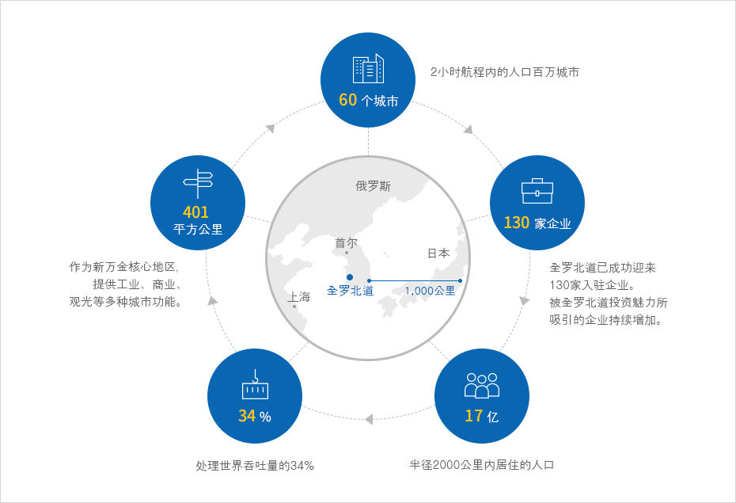
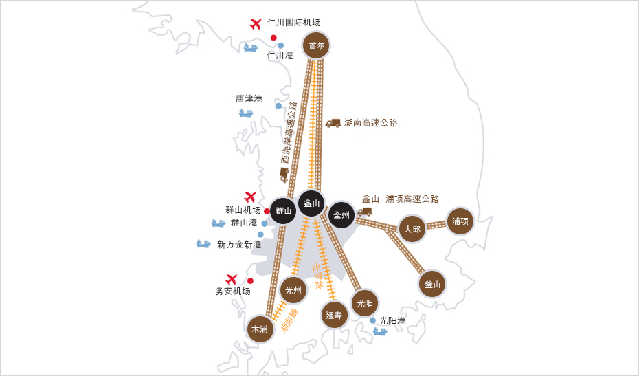
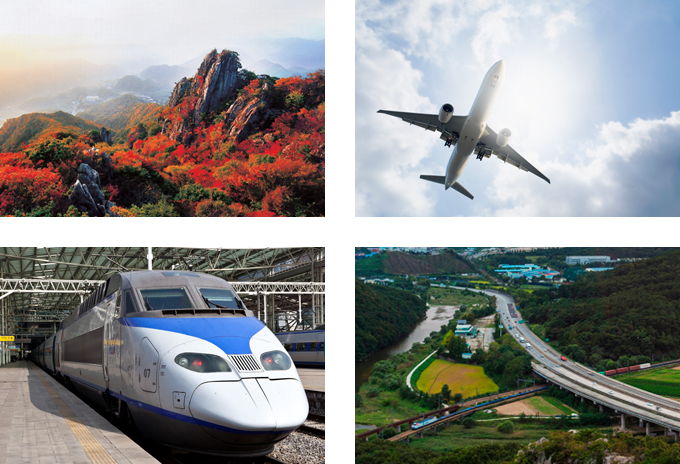
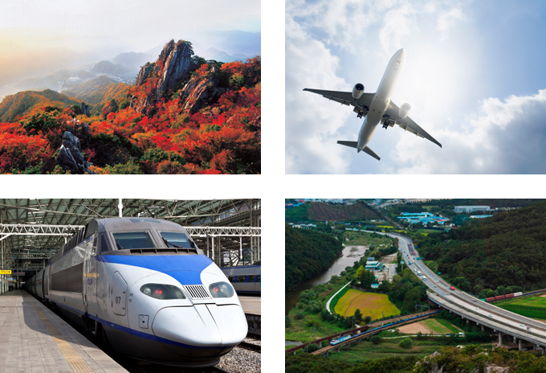

21世纪东北亚主要商务据点
- Home
- 投资优势
- 21世纪东北亚主要商务据点
全北比想象中要近很多
外国企业的最佳投资区
全罗北道距离世界最大的市场只有500km。不仅如此，靠近中国、日本、俄罗斯等巨大的配套市场。
两小时飞行距离内分布着中国上海、青岛和日本东京，以及俄罗斯海参威等人口在100万名以上的城市60多座。
另外，全北位于半天功夫就能到达大韩民国任何地方的核心区域。所以，全罗北道作为东北亚的商务中心，具备非常有利的地势。


- 60个城市：2小时航程内的人口百万城市
- 401平方公里：作为新万金核心地区，提供工业、商业、观光等多种城市功能。
- 130家企业：全罗北道已成功迎来130家入驻企业。 被全罗北道投资魅力所吸引的企业持续增加。
- 34%：处理世界吞吐量的34%
- 17亿：半径2000公里内居住的人口

发达的交通系统


全罗北道是离中国最近的地区，具有可停靠大型船只的深水港口，另外具备与此相连的机场、道路、铁路等优秀交通基础设施等，提供最佳商务环境。
全罗北道到全国任何一个地方都只要半天时间。因配有连接东西南北的八条高速公路、KTX等四条铁路线及机场和港口等最佳交通环境而自豪。
-
高速公路
-
湖南、西海岸、88奥林匹克
全州 ↔ 光阳、大田 ↔ 统营、益山 ↔ 长水、高敞 ↔ 潭阳、全州 ↔ 光阳、新万金 ↔ 全州(推进中)
-
湖南、西海岸、88奥林匹克
-
铁路
- KTX、湖南线、全罗线、长项线
- 湖南线：首尔↔益山↔木浦
- 全罗线：首尔↔益山↔全州↔丽水
- 长项线：首尔↔天安↔长项↔群山↔益山
- 新万金↔群山↔益山(建设中)
-
港口
-
群山港：28个泊位，新万金新港：18个泊位，唐津港：36个泊位，光阳港：78个泊位
※ 新万金新港(建设中)
-
平均水深：20~45m(国内最深)，每年吞吐量 8,000万吨
※ 群山是最靠近中国的港口
(单位 : Km)群山是最靠近中国的港口 群山 仁川 平泽 光阳 釜山 上海 684 832 886 750 887 青岛 558 624 576 783 889  

-
群山港：28个泊位，新万金新港：18个泊位，唐津港：36个泊位，光阳港：78个泊位
-
机场
- 群山机场(道中心), 务安机场(1小时30分)、清州机场(1小时30分)、仁川机场(2小时30分)、新万金国际机场(促进中)